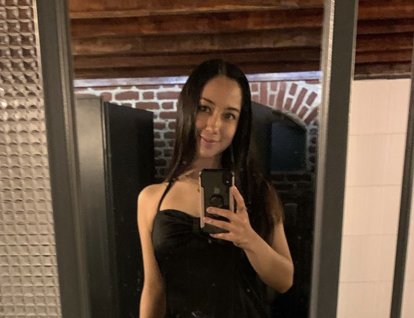
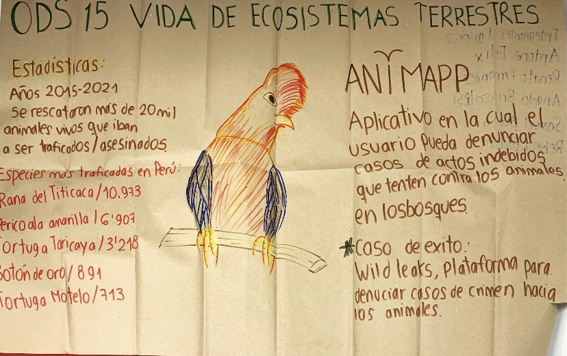
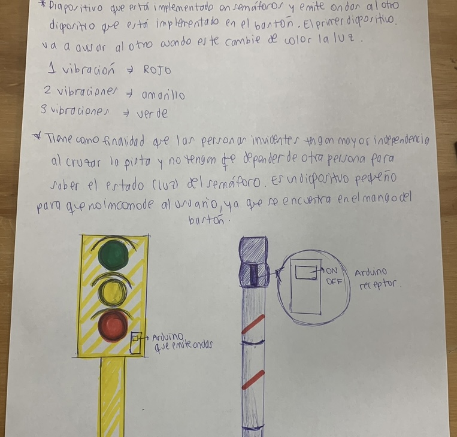
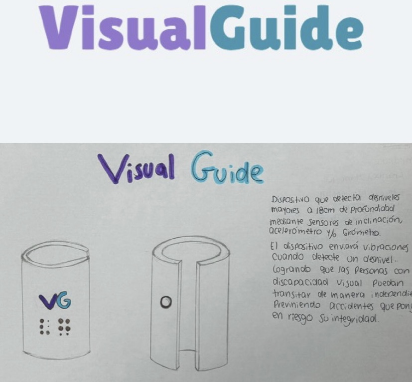

Rebecca Romina Pachas Vergara
Soy estudiante de la carrera de Diseño y gestión de modas. Actualmente laboro en el área retail como jefe de tienda. Me considero una persona creativa, perseverante y en búsqueda de oportunidades para mi crecimiento personal y profesional. En mis tiempos libres me gusta escuchar música y bailar ballet.

ACTIVIDAD 1
Realizamos una actividad grupal en la que eligimos proponer un proyecto que vaya de la mano con la ODS 15. En el cual ideamos una app que el usuario pueda denunciar casos de actos indebidos contra los animales en los bosques.

ACTIVIDAD 2
Realizamos una actividad individual en la que teníamos que idear un dispositivo que sea beneficioso y creativo. En mi caso, ideé un dispositivo que está implementado en el bastón y al semáforo, emite una onda y vibra para avisar cuando el semáforo cambie de color y tiene como finalidad que las personas invidentes tengan mayor independencia al momento de cruzar la pista.

ACTIVIDAD 3
Realizamos una actividad grupal en la que elegimos mi idea inicial pero en conjunto la mejoramos por una más viable. Nuestra propuesta se trata de un dispositivo implementado como un accesorio en un bastón que detecta desniveles mayores a 18cm de profundidad mediante sensores. El dispositivo enviará vibraciones cuando este detecte un desnivel de esa manera, las personas con discapacidad visual puedan transitar de manera independiente y previniendo incidentes.

Nullam vitae nunc vulputate
In pellentesque cursus velit id posuere. Donec vehicula nulla.

Phasellus magna faucibus
Nulla dignissim libero maximus tellus varius dictum ut posuere magna.

Proin quis mauris
Etiam ultricies, lorem quis efficitur porttitor, facilisis ante orci urna.

Gravida quis varius enim
Nunc egestas congue lorem. Nullam dictum placerat ex sapien tortor mattis.

Morbi eget vitae adipiscing
In quis vulputate dui. Maecenas metus elit, dictum praesent lacinia lacus.

Habitant tristique senectus
Vestibulum ante ipsum primis in faucibus orci luctus ac tincidunt dolor.

Pharetra ex non faucibus
Ut sed magna euismod leo laoreet congue. Fusce congue enim ultricies.

Mattis lorem sodales
Feugiat auctor leo massa, nec vestibulum nisl erat faucibus, rutrum nulla.


{kind=link}
{kind=link}
{kind=link}
{kind=link}